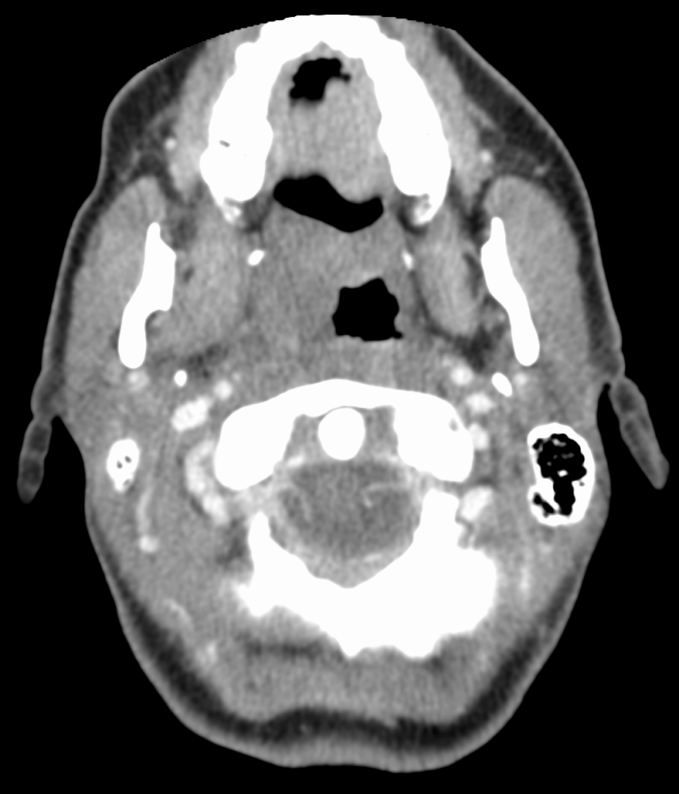

Ficha del catálogo
Absceso periamigdalino
- Sistema
- Cabeza y cuello
- Modalidad
- TC
- Región
- Orofaringe y espacio periamigdalino
- Dificultad
- Intermedio
Es una colección purulenta situada entre la cápsula amigdalina y el músculo constrictor superior de la faringe, casi siempre como evolución de una amigdalitis aguda. Se presenta con odinofagia intensa unilateral, voz gangosa, trismo y desviación de la úvula. Es la infección profunda de cabeza y cuello más frecuente en adolescentes y adultos jóvenes.
Técnica
La tomografía con contraste intravenoso es la técnica de elección porque separa el flemón de la colección drenable y define la extensión hacia los espacios cervicales profundos. El ultrasonido intraoral o submandibular resulta útil cuando el trismo lo permite y evita radiación en pacientes jóvenes. La resonancia se reserva para casos complejos o para valorar complicaciones vasculares e intracraneales.
Qué observar
- Colección hipodensa con realce periférico en anillo junto al polo amigdalino
- Desplazamiento medial de la amígdala y de la úvula hacia el lado sano
- Borramiento de los planos grasos del espacio parafaríngeo adyacente
- Grado de compromiso de la vía aérea orofaríngea
- Extensión caudal hacia los espacios parafaríngeo y retrofaríngeo
- Permeabilidad y calibre de la vena yugular interna del lado afectado
Hallazgos
Se observa una colección de baja atenuación con pared que capta contraste de forma intensa, situada por fuera de la amígdala y por dentro del músculo constrictor, con desplazamiento medial de la pared faríngea. La grasa vecina aparece infiltrada y suele haber edema del paladar blando y adenopatías cervicales reactivas del mismo lado. Cuando solo existe flemón se aprecia realce difuso del tejido, aumentado de volumen pero sin centro licuado.
Perlas
La distinción entre flemón y absceso cambia el tratamiento, ya que el primero responde a antibiótico y el segundo suele requerir punción o drenaje. Un realce homogéneo sin centro hipodenso franco debe informarse como flemón, y las burbujas de gas dentro de la colección apoyan con fuerza la presencia de pus.
Diagnóstico diferencial
- Amigdalitis aguda sin colección
- Hay amígdalas aumentadas con realce estriado y simétrico, sin centro hipodenso ni desplazamiento de la pared.
- Absceso retrofaríngeo
- Se sitúa en la línea media por delante de la columna cervical y desplaza la pared faríngea hacia delante.
- Neoplasia amigdalina
- Es una masa sólida infiltrativa de evolución subaguda, con adenopatías necróticas y sin signos inflamatorios agudos.
- Quiste de la segunda hendidura branquial infectado
- Se localiza por delante del músculo esternocleidomastoideo y por fuera del espacio carotídeo, con antecedente de masa previa.
Simuladores
- Asimetría amigdalina fisiológica sin cambios inflamatorios
- Realce heterogéneo de las criptas amigdalinas normales
- Adenopatía necrótica yugulodigástrica adyacente al polo amigdalino
Por modalidad
- TC
- Diferencia flemón de absceso, mide la colección y descarta extensión a espacios profundos y trombosis venosa.
- RM
- Ofrece mejor detalle de partes blandas y de las complicaciones intracraneales, sin radiación ionizante.
- US
- Por vía intraoral confirma la colección y puede guiar la aspiración, aunque el trismo limita su uso.
Protocolo
Tomografía de cuello con contraste intravenoso en fase de partes blandas, desde la base del cráneo hasta el opérculo torácico, con cortes finos y reconstrucciones coronales y sagitales. Se valora la vía aérea y se recorre el trayecto de los vasos cervicales para descartar tromboflebitis séptica de la vena yugular interna. En pacientes con inestabilidad respiratoria la prioridad es asegurar la vía aérea antes del estudio.
Clasificación
Errores frecuentes
- Informar como absceso un flemón por sobreinterpretar zonas de realce heterogéneo
- No seguir el trayecto de la vena yugular interna y pasar por alto una trombosis séptica
- Limitar el estudio a la orofaringe sin cubrir los espacios cervicales inferiores

absceso periamigdalino orofaringe infección cervical profunda flemón realce en anillo trismo cabeza y cuello